LYXF-PE-tools的使用:
先随便说一下这个PE-tools有什么用?
我开发这款PE-tools是为了学习而开发的，它可以解析windows 32/64位程序中比较常用的一些属性.里面有个稍微比较好的功能就是可以导入表注入,我不知道为啥relase版不能注入,debug版却能....
下载链接: https://github.com/I0gan/LYXF_Tools
这个PE-tools采用纯C语言写的,有不足的地方,轻喷.
如何查看命令:
进入之后输入ls即可查看哪些功能的命令.
而输入o是打开一个PE文件
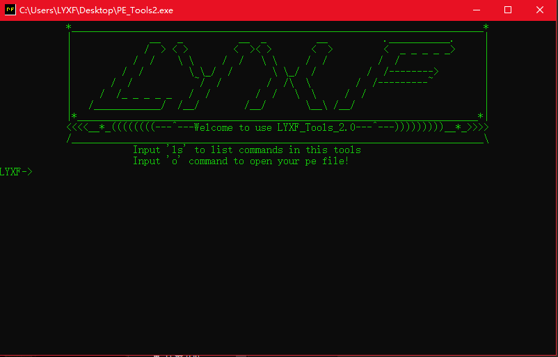
废话不多说,咋们来实例:
输入ls查看命令:
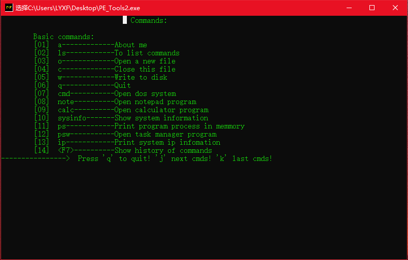
我来解释一下:
Commands:
Basic commands: 基础命令
[01] a-------------关于我
[02] ls------------列出命令
[03] o-------------打开一个新的文件
[04] c-------------关闭这个文件
[05] w-------------写到磁盘里
[06] q-------------退出
[07] cmd-----------进入dos命令界面
[08] note----------打开记事本程序
[09] calc----------打开计算器
[10] sysinfo-------查看系统信息
[11] ps------------查看进程
[12] psw-----------打开任务管理器
[13] ip------------查看网络适配器信息
[14] <F7>----------列出历史命令
----------------> 按'q' 退出! 'j' 下一行命令 'k' 上一行命令
我们按一下’j’查看主要的PE工具命令:
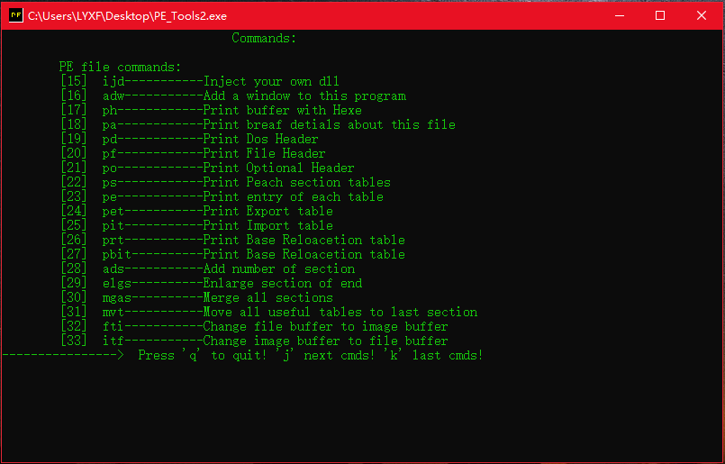
Commands:
PE file commands: PE文件命令
[15] ijd-----------注入自己的dll
[16] adw-----------增加一个窗口到这个程序里
[17] ph------------以十六进制的方式查看文件 --类似于Winhex
[18] pa------------列出文件简要信息
[19] pd------------查看PE文件 Dos头
[20] pf------------查看PE文件 File头
[21] po------------查看PE文件 可选头
[22] pes------------查看每一个节
[23] pe------------查看各种表的入口(是可选头里的信息)
[24] pet-----------查看导出表
[25] pit-----------查看导入表
[26] prt-----------查看重定位表
[27] pbit----------查看绑定导入表 --(这里说一下,上面图中有点错误,没关系我已修复)
[28] ads-----------向PE文件中增加一个节
[29] elgs----------增大最后一个节
[30] mgas----------合并所有节
[31] mvt-----------移动所有有用的表到最后一个节里,一般是创建节后再移动表(比如导入表,导出表)
[32] fti-----------
改变文件镜像为内存镜像 (意思是将加载到内存里的PE文件模拟系统启动方式拉长文件转化为可执内存)
[33] itf-----------这个就与上个命令操作相反,将可执行的内存镜像转化为静态文件时的结构
----------------> 按'q' 退出! 'j' 下一行命令 'k' 上一行命令
功能不多,但值得学习.
如何来打开一个PE文件
在主页面输入o回车,这里会提示我们输入路径,可以直接拖就行,我就拖一个c盘下的VirtuaNES.exe
然后回车即可,会显示打开成功! (名字有空格的好像不太行哦!)
如何来查看一个PE文件的常用属性
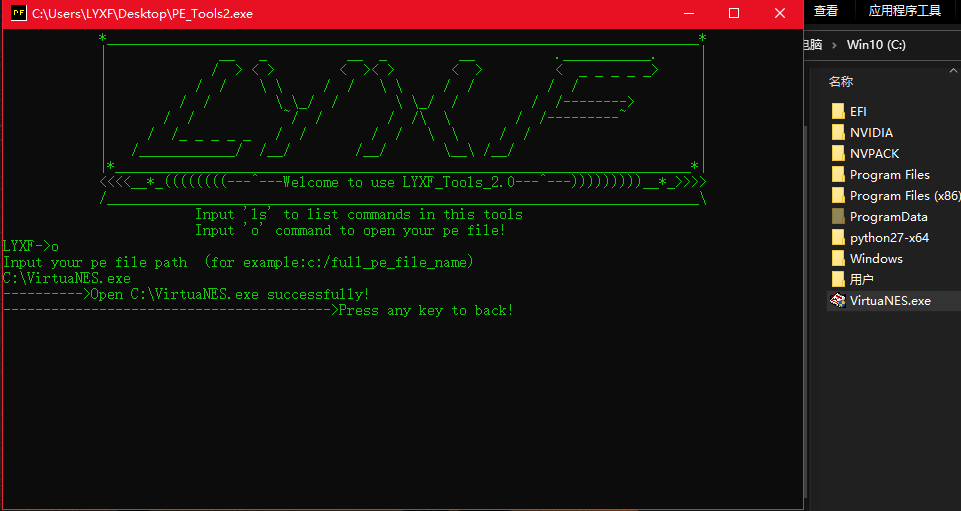
成功后我们来查看一下关于文件吧,输入 pa 打印关于这个文件.
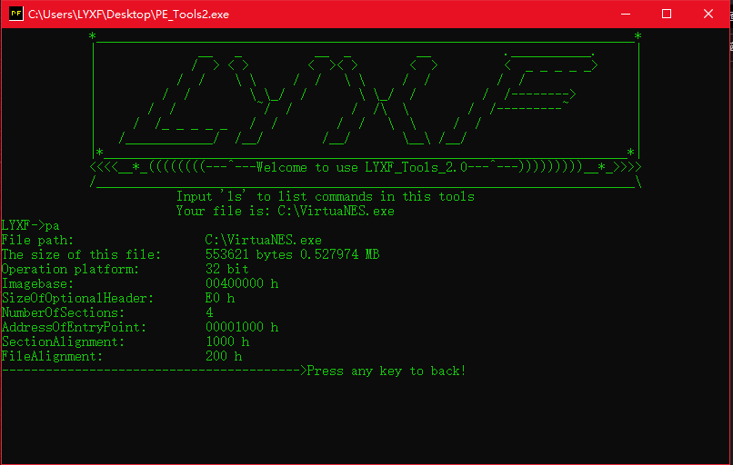
可以看到:有一些基础的属性可以查看:
File path: C:\VirtuaNES.exe (文件路径)
The size of this file: 553621 bytes 0.527974 MB (文件大小)
Operation platform: 32 bit (运行平台)
Imagebase: 00400000 h (程序基址)
SizeOfOptionalHeader: E0 h (可选pe)
NumberOfSections: 4 (节的个数)
AddressOfEntryPoint: 00001000 h (程序入口地址)
SectionAlignment: 1000 h (加载后内存节的对齐最小单位)
FileAlignment: 200 h (静态文件对齐最小单位)
输入pd查看Dos头
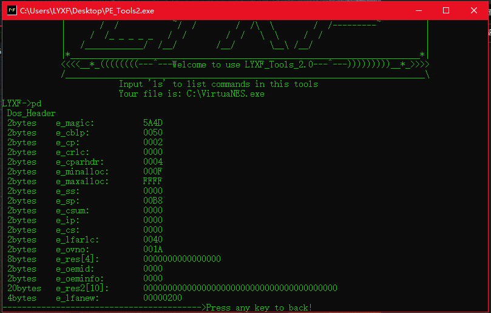
这里我就不详细解释各个属性.最常用的就是第一个属性(标志) 和最后一个属性(偏移)
输入pf查看File头
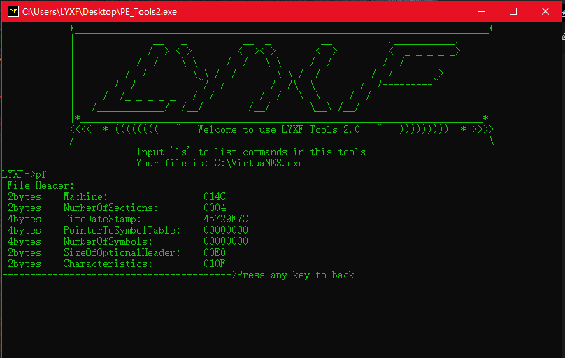
2bytes Machine: 014C 运行平台
2bytes NumberOfSections: 0004 节的个数
4bytes TimeDateStamp: 45729E7C 时间搓
4bytes PointerToSymbolTable: 00000000
4bytes NumberOfSymbols: 00000000
2bytes SizeOfOptionalHeader: 00E0 可选头的大小
2bytes Characteristics: 010F 属性
输入po查看optional头
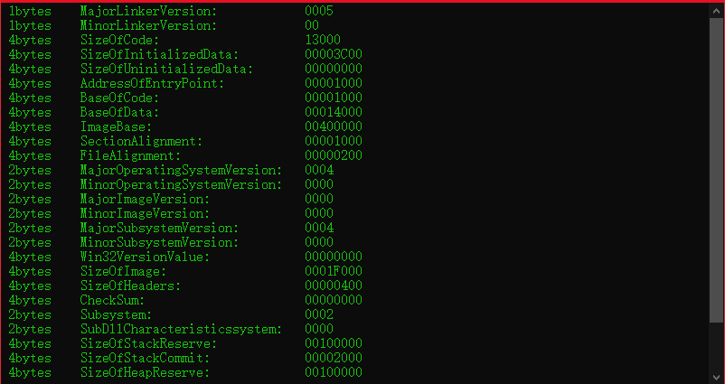
这里我就不过多解释,用到时自己百度一下吧!
输入pes查看每一个节(有些称呼为段)
按j查看下一个节,按k查看上一个节,按q退出
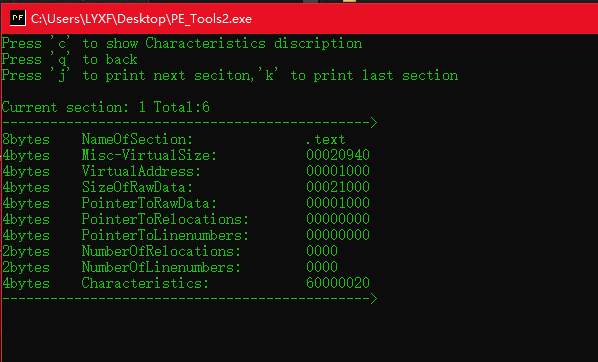
这里输入'c',对应着计算就可出属性.而值对应的是每一个节最后一个属性(Characteristics)的值
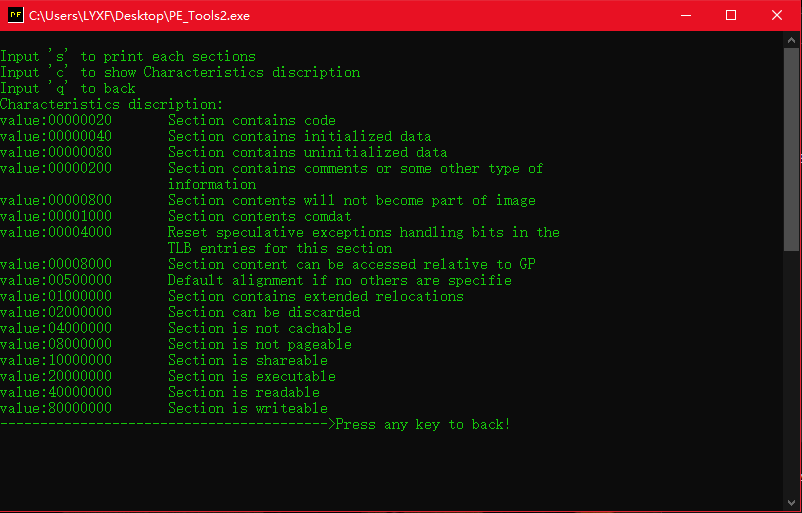
输入pe查看各种表的入口
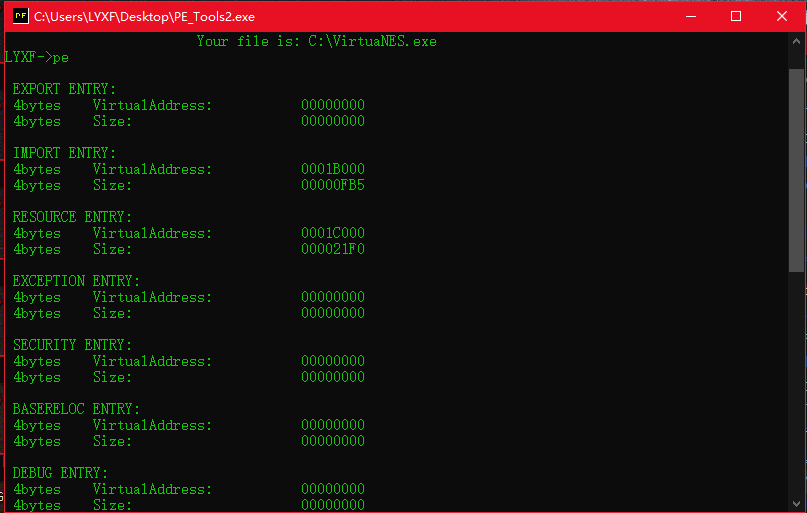
输入pet查看导出表
输入't'代表查看导出表的原结构,输入'f'查看各个函数的对应关系,比如函数地址,函数名称,函数编号.

我们来输入t查看原来的面目.
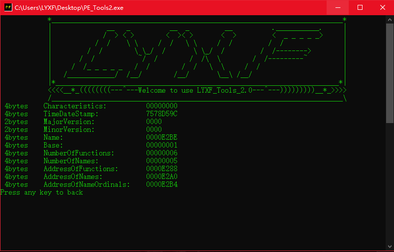
输入f可以查看导出的函数有哪些
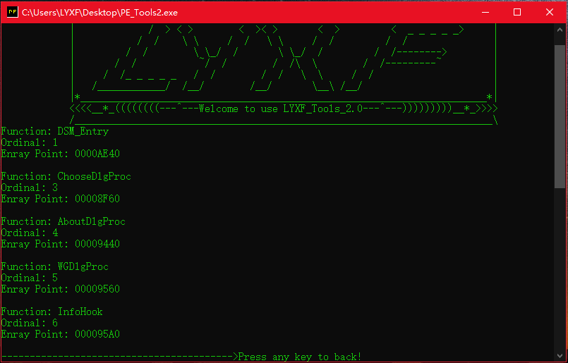
输入pit查看导入表
输入 j查看下一个导入的dll,输入k查看上一个导入的dll,输入 f 即查看对应dll里导入的函数
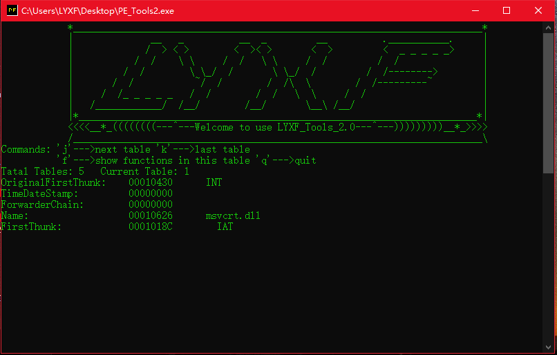
输入f看看:按下任意键即可查看下一行导入的函数,按q退回到上一级

输入pbit查看绑定导入表
由于我的程序没有,即委托大家了
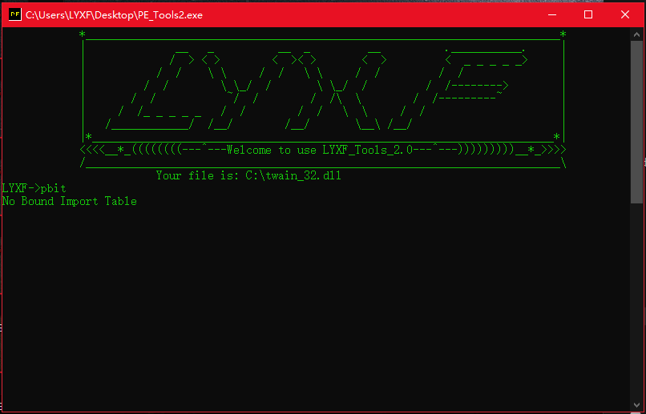
输入ph查看文件的16进制
输入j 下一行,输入k上一行,q退出
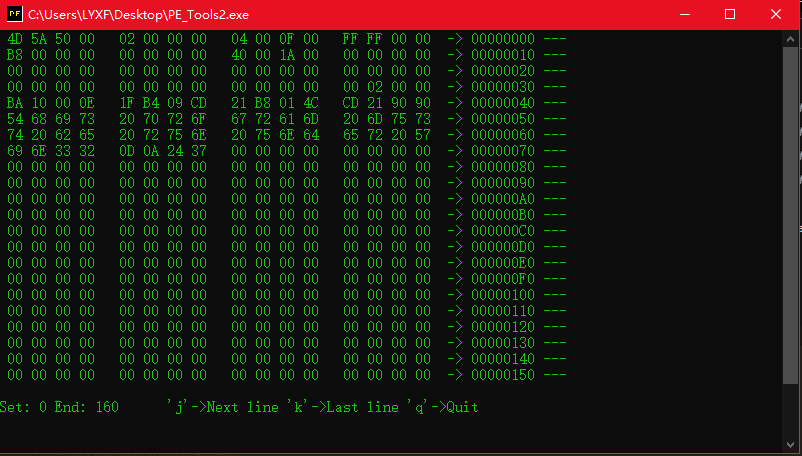
如何使用dll注入工具:
这里首先我来自己写一个dll,(你也可以写个病毒!) ,这里我以下面代码作为测试.
说明一下:这个工具只能注入debug程序,realse版就不能注入...tcl..(大佬来帮忙吧...)
#include "stdafx.h"
#include <stdio.h>
#include <windows.h>
DWORD Times=0;
extern "C" __declspec(dllexport) void __cdecl LYXF_fun();
BOOL APIENTRY DllMain( HANDLE hModule,
DWORD ul_reason_for_call,
LPVOID lpReserved
)
{
switch(ul_reason_for_call)
{
case DLL_PROCESS_ATTACH: LYXF_fun(); break;
case DLL_PROCESS_DETACH: MessageBox(0,"Dll end Running","LYXF",0); break;
}
return TRUE;
}
void LYXF_fun()
{
MessageBox(0,"Dll start Running","LYXF",0);
}
编译得到自己的dll之后,开始注入吧!
我来注入下面自己的PE程序
现在我这里有个自己编译以上代码获得的Mydll.dll一个debug版自己编译好的一个Notepad.exe,运行Notepad.exe看看..
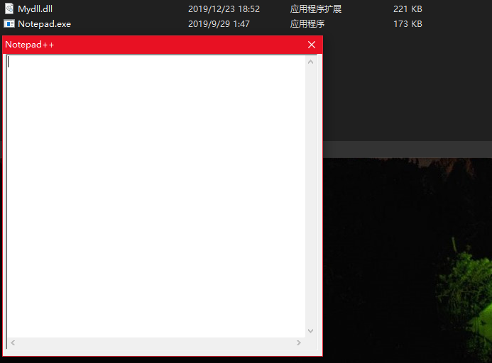
使用petools打开它
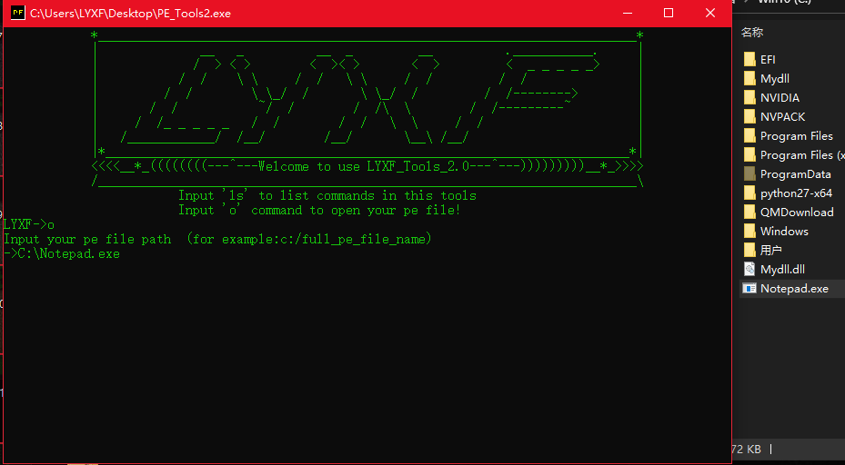
输入ijd命令,会看到提示我们输入一个dll的路径,把自己编译好的dll拖进去.
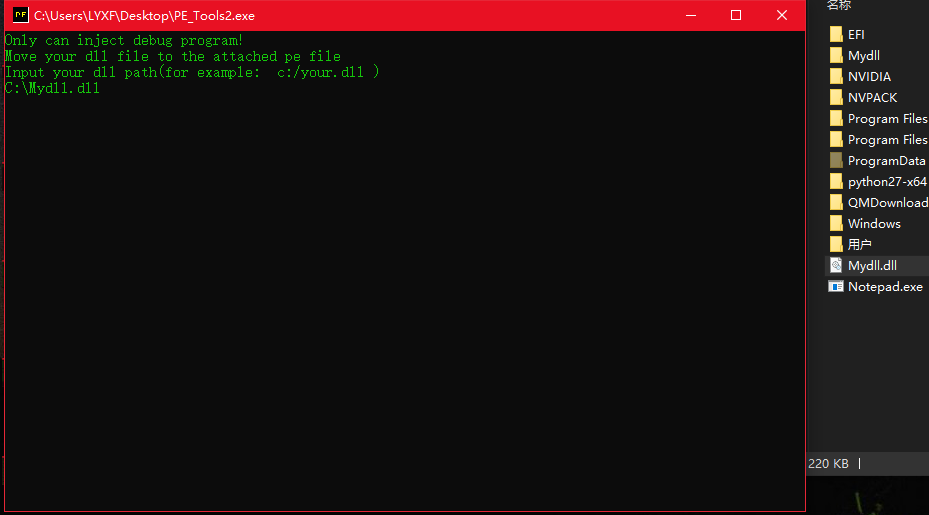
拖进之后,提示我们输入函数.就输入dll所显示的某一个函数名称即可.
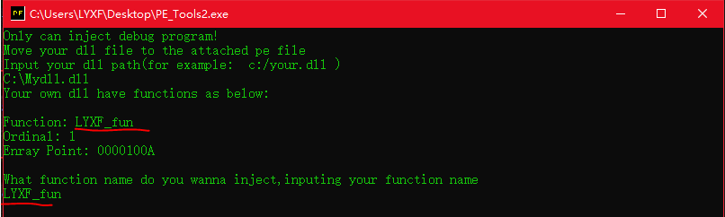
然后回车,完毕
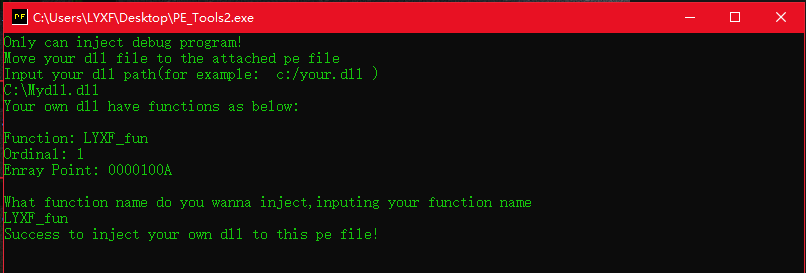
提示成功! 使用 w 命令进行写入磁盘.路径就靠自己来写了,我就写在d盘下吧.
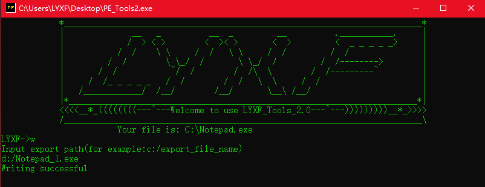
咋们来d盘下运行是否注入成功.
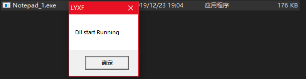
启动程序之前,弹出了一个框,说明咋们的dll注入成功了.这是在dll附加时运行的函数.点击确定看看.
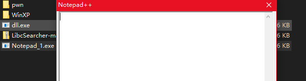
与原来没有区别,关掉它.
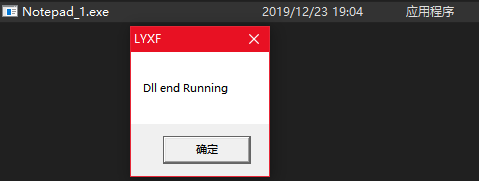
出现了另一个弹框,这是在dll detach时运行的函数,把它拖进petools看看该Notepad_1看看导入表的情况,输入c 关闭该pe文件
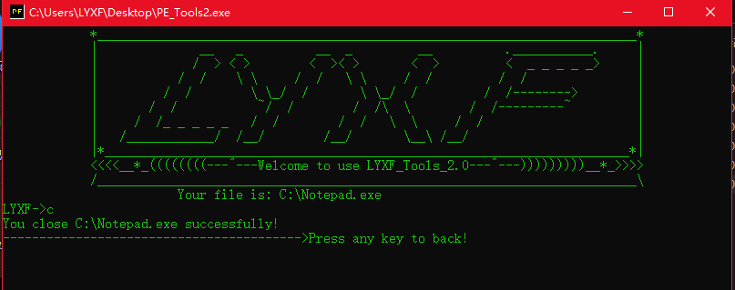
再输入o重新打开一个新的文件.把Notepad_1拖进来.
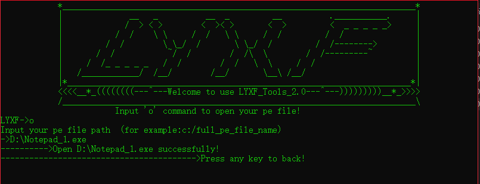
输入pit命令来查看导入表.使用j来查找我们自己dll的名称.
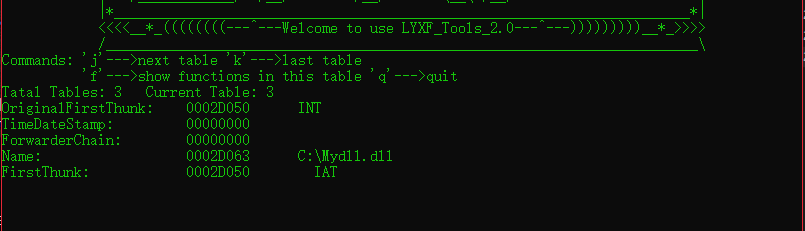
输入f查看一下当前dll的导入函数
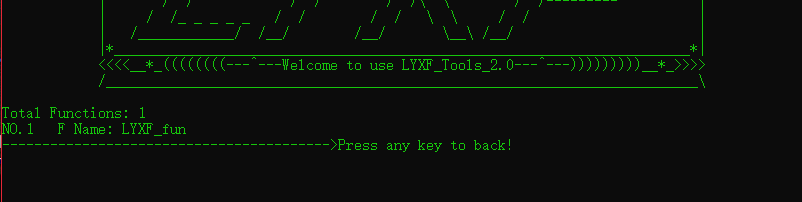
从上面可以看到,我们的dll名称和导入函数的名称,所以我们的dll注入成功! 其实我的工具太弱了,但有源码,能够揭示dll注入的本质.望能够给学习pe的学者带来帮助.
如何使用给程序增加一个窗口:
这里只是为了向程序注入shellcode才写的一个功能,要想注入自己的shellcode,只需修改源码中的shellcode即可.
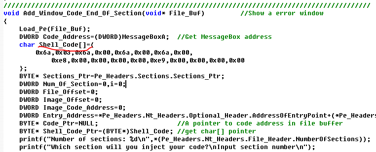
这个shellcode是向程序增加一个错误弹窗,比较原理也比较简单,就是把shellcode注入到某一个节的尾部,然后再修改程序入口指向shellcode即可.使用adw命令来添加shellcode.会提示要向哪个节注入shellcode,我们随便一个吧.
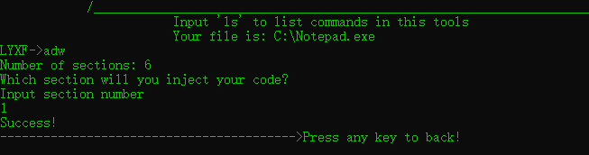
写入到磁盘,运行一下
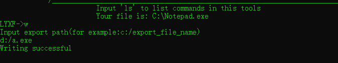
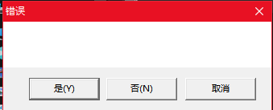
可以看到有错误窗口,增加shellcode成功,若你们想要添加自己的shellcode,只需修改源码编译即可...
结语
好了以下的还有许多弱智命令我就不多说了,比如增大节,合并节,移动表(这个移动表可以是加壳的原理哦,会移动表是学会加壳的前提),
还有将磁盘里的pe文件转为可运行时的pe文件等等命令.我现在就不想搞windows开发了,转行了到linux开发了,这个petools工具就到这里吧,后期的维护就不维护了,有兴趣的同学去研究一下我的源码,不懂的可以问我,我会尽全力解答.其实这款petools还可以打造为shllecode注入工具,加壳工具,离这些工具的开发只有一步之遥了,这需要你们来实现了.